O Instituto Tedeschi é uma empresa da área da beleza, fundada em julho de 2022 pela empresária Midia
Ferreira Tedeschi, especialista no mercado de cosméticos há 25 anos.
Midia realizou muitos desafios em grandes multinacionais como account manager em vendas técnicas de
matérias-prima para desenvolvimento de cosméticos, bem como terceiristas de cosméticos.
O Instituto Tedeschi se divide em dois segmentos: a área de Estética Avançada e Mentoria de
cosméticos com laboratório próprio, ou seja, consultoria para empresas da área de cosméticos em
vendas e desenvolvimento cosméticos.

Empresária e especialista no mercado de cosméticos há 25 anos, atuou em multinacionais como account manager em vendas técnicas de matérias-prima para desenvolvimento de cosmético.
Cirurgião dentista especialista em harmonização orofacial. Formado na USP, Dr. Vaine Tedeschi se dedica em estudos para avançar cada vez mais em técnicas inovadoras do mercado de HOF afim que entregar um resultado cada vez efetivo ao paciente.

Maquiadora profissional há mais de 5 anos e especialista em maquiagem beauty. Possui conhecimento sobre mercado de beleza e colorimetria. Além disso, é digital influencer, maquiadora artística e estudante de biomedicina.
O Instituto Tedeschi conta com uma clínica de harmonização orofacial e estética avançada,
projetada para desempenhar métodos da harmonização orofacial, HOF e corporal, onde executam
procedimentos clínicos com produtos e equipamentos de alta tecnologia aprovados pela Anvisa.
Os atendimentos ocorrem de modo personalizado e em dias e horários diferenciados, se adequando
às necessidades de cada paciente.

Estímulos de Colágeno
PRP
Laserterapia
Bioestimuladores
Preenchimento Facial
Fios de PDO
Ultrassom Microfocado e Macrofocado
Acumpultura Auricular
Jato de Plasma
Remoção de Estrias
Diminuição de Flacidez
Diminuição de Gordura